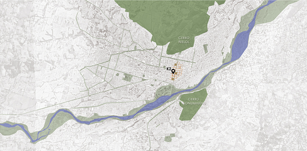
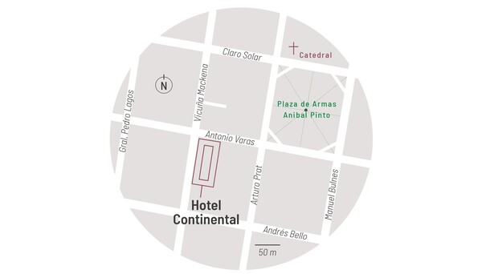
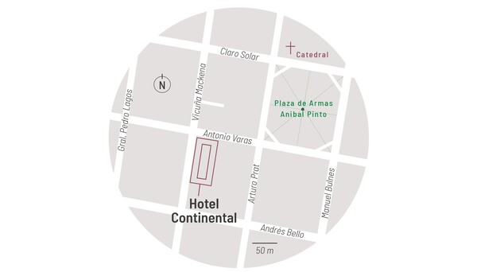
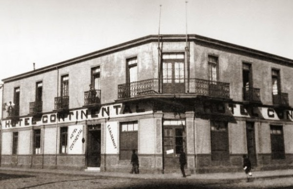

Ubicación
Se encuentra ubicado, centralmente, a una cuadra de la "Plaza de Armas Aníbal Pinto", en la calle Antonio Varas N°708. 
El Hotel Continental llamado en sus primeros años "Hotel de France", fue construido el año 1890, fue uno de los primeros hoteles del país, actualmente es Monumento Nacional en categoría de Monumento Histórico mediante el Decreto Nº 294 (2011). El Hotel tiene un alto valor rememorativo, arquitectónico, constructivo, urbano y cultural, que lo convierte en un emblema histórico de la ciudad de Temuco.
Se encuentra ubicado, centralmente, a una cuadra de la "Plaza de Armas Aníbal Pinto", en la calle Antonio Varas N°708. 

Edificio esquina, orientación nor-poniente, de dos niveles, con ventanas rectas, donde originalmente existía un balcón para cada vano. Posee una arquitectura característica de los edificios de su época.
Loren ipsum…
Casa de remolienda es una película chilena de 2007 dirigida por Joaquín Eyzaguirre y escrita por Gonzalo San Martín y Cynthia Rimsky. La pelicula muestra muchas escenas que fueron grabadas al interior del Hotel Continental.
La Ruta Patrimonial Huellas de Pablo Neruda es el resultado de un trabajo de investigación realizado por el Ministerio de Bienes Nacionales, con el apoyo de la Universidad Católica de Temuco, que ha identificado en la ciudad de Temuco aquellos lugares significativos en la temprana historia del premio Nobel de Literatura chileno Pablo Neruda.Compuesta por 18 hitos. Se emplaza en el casco histórico y parte del centro de la ciudad de Temuco, siendo el hito numero 15 el "Hotel Continental".